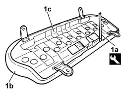
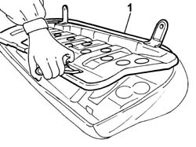

7050A56 rear seat cushion ribbing - r r
- Path
- Procedures > 70 FITTINGS > 7050 REAR SEATS > 7050A rear seat assembly > 7050A56 rear seat cushion ribbing - r r
- Kind
- repair procedure (removal / refitting; the operation number is the code)
- Applies to
- all engines; all production periods
- Interactive page
- https://sloeber94.github.io/elrnDB-fPnd/en/#/2753273
Applies to: all engines; all production periods
 Removing
Removing
 Refitting
Refitting7040B10 load platform (luggage platform) trim - r+r
7050A20 one-piece rear seat cushion - r r
1. Using a cutter (1a), release the cover (1b) from the cushion frame (1b) along the entire perimeter.
 | Name | Country |
|---|---|---|
1a | Scraper blade | 1.878.077.000 |

Applies to: all engines; all production periods
1. Remove the cushion frame.

Applies to: all engines; all production periods
Refitting
RemovingFit the cushion frame on the cover complete with upholstery.
Fit the edge of the cover on the perimeter of the frame.
Check that the fabric is taut and that there are no creases.
7050A20 one-piece rear seat cushion - r r
Topics linked from this page (3)
- 7040B10 load platform (luggage platform) trim - r+r
- 7040H80 parcel rack
- 7050A20 one-piece rear seat cushion - r r